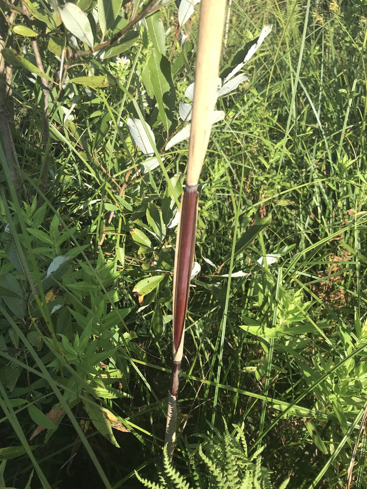

01
GIANT REED
Arundo donax HABIT · Massive leafy, cane-like stand
HABIT · Massive leafy, cane-like standLOOK FIRST
Broad, often drooping blades on robust jointed canes. Check for conspicuous leaf-base lobes clasping the stem.
INTRODUCED IN TEXAS
01 / QUICK ID
Use this 3-way visual sort outdoors. The flower heads are clues; confirm with the leaf base or spikelet.
HABIT · Massive leafy, cane-like standBroad, often drooping blades on robust jointed canes. Check for conspicuous leaf-base lobes clasping the stem.
 HABIT · Tall wetland reed with a soft feathery plume
HABIT · Tall wetland reed with a soft feathery plumeOften a silky-looking, branched plume. Verify tiny silky rachilla hairs between florets.
 HABIT · Tall coarse marsh grass with long arching leaves
HABIT · Tall coarse marsh grass with long arching leavesCoarse leaves with fine sawlike margins, a very open branching panicle, and a long papery inner ligule.
02 / FIND THE STRUCTURE
Follow one leaf blade down to its sheath. Expose the inside where they join — that is the ligule.
Broad, rounded leaf-base lobes
 The actual Arundo blade base and pale fringed collar
The actual Arundo blade base and pale fringed collarShort inner membrane with fine fibers
 Actual Phragmites blade–sheath junction and hair fringe
Actual Phragmites blade–sheath junction and hair fringeLong, papery true ligule
 NOT THE LIGULE · Visible outside node and sheath; inner ligule NOT visible
NOT THE LIGULE · Visible outside node and sheath; inner ligule NOT visibleFOLLOW THE BLADETrace the flat green leaf toward the stem.
OPEN THE SHEATHLook INSIDE the blade–sheath junction; don't use a stem node.
USE A RULERPhotograph the true ligule with a 1-mm scale.
03 / REPRODUCTIVE CHARACTERS
Compare real panicles, then examine mature spikelets under a 10× hand lens or magnification.
 Arundo: branching head, often held relatively upright
Arundo: branching head, often held relatively uprightLarge, stiffly branched plume; form varies.
Phragmites: many-branched, often silky plumeSilky, feathery flowering head; form varies.
 Zizaniopsis: conspicuously loose branching head
Zizaniopsis: conspicuously loose branching headLarge open panicle; male and female spikelets.
Where the silky hairs are attached matters more than how fluffy the entire plume looks.
 Real Arundo spikelets; exact hair attachment not exposed
Real Arundo spikelets; exact hair attachment not exposedSilk mainly on the lower lemma (floret bract). The rachilla is hairless.
 Real dissected Phragmites spikelet, source annotations
Real dissected Phragmites spikelet, source annotationsLong silky hairs on the rachilla between individual florets.
04 / CONFIRM & DOCUMENT
Do not mark a reed stand invasive from a single flowering-head photo.

Source-labeled native American reed; NOT a Hays genetic voucher Source-vouchered introduced reed collar; NOT a Hays voucher
Source-vouchered introduced reed collar; NOT a Hays voucher| CHECK | NATIVE americanus | INTRODUCED australis |
|---|---|---|
| Old sheath | Often sheds / peels away | Often remains attached |
| Exposed stem | Often glossy and reddish | Often duller and ridged |
| Ligule, approx. | 1.0–1.7 mm | 0.4–0.9 mm |
Important: Gulf Coast berlandieri is another regional lineage. Even with a good photo, some stands remain lineage unresolved. Use multiple characters or genetic confirmation before treatment.
01 Entire colony and habitat
02 Full stem with attached leaves
03 Leaf base and older sheaths
04 Opened inner ligule + 1-mm scale
05 Attached flowering panicle
06 Ripe spikelets + scale (if present)
Identification: USDA-NRCS Phragmites key; Minnesota AISRC; Arundo morphology; Kew Zizaniopsis.
Photos: Forest & Kim Starr (CC BY 3.0); Rlevse (public domain); Harry Rose (CC BY 2.0); Alex Abair (CC BY 4.0); Sheila Collins Bourgoin (CC BY 4.0); David Giblin / Burke Herbarium (CC BY). Original individual source and license links in the photo-led booklet and repository species records.